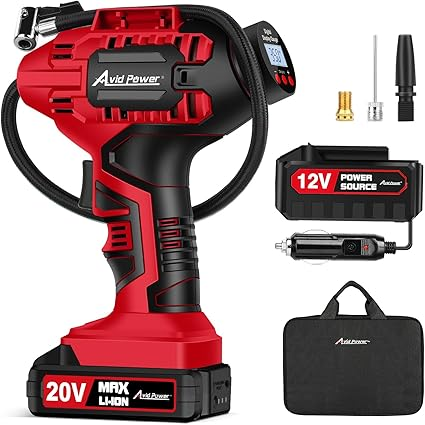
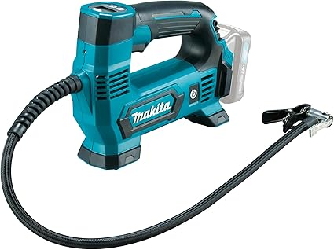
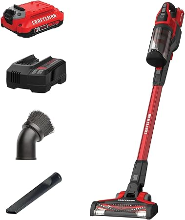
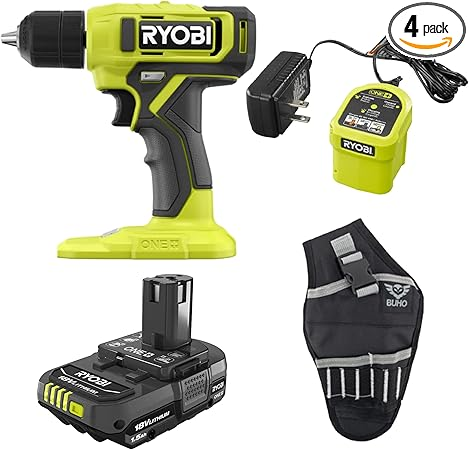

May 2026
Buying tireinflator online can feel risky. Mixed reviews, confusing specs, and every brand claiming to be "the best." Here's what actually matters.

→ #3 — AstroAI Tire Inflator Portable Air Compressor Pump 150PSI 12V DC 110V AC — Highly reviewed

→ #2 — AVID POWER Tire Inflator Portable Air Compressor 20V Cordless Car Tire Pump — Great value

→ #4 — CARSUN AC DC Tire Inflator Portable Air Compressor Dual Power Home 110V AC — Editor's pick

→ #1 — 9600mAh Tire Inflator Portable Air Compressor Corded Cordless Tire Inflator — Top rated
→ #5 — Tire Inflator Portable Air Compressor 3X Faster with Digital Pressure Gauge — Fan favorite
Overbuying features — Most people use 20% of high-end tireinflator features. Don't pay for what you'll never touch.
Blind brand loyalty — Your favorite brand might not make the best tireinflator. Stay open to better options.
Trusting fake reviews — Look for reviews with photos and specific details. Generic praise is often planted.
Our comparison tables on besttireinflator.com break down options by price, features, and ratings. Start there.